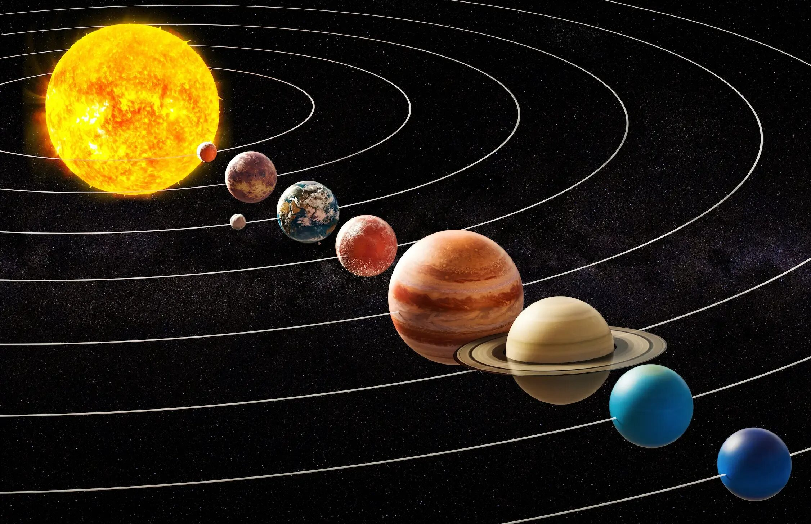

Парад планет
1. Как выглядит
На вечернем или утреннем небе выстраиваются несколько ярких точек, похожих на крупные звезды. Они располагаются вдоль одной линии — дуги или полосы. В отличие от звезд, планеты не мерцают, а горят ровным светом. Самый яркий участник — Венера, затем по убыванию: Юпитер, Марс (с красноватым оттенком), Сатурн (желтоватый), а также Меркурий, который держится низко над горизонтом. При хороших условиях можно увидеть сразу пять планет одновременно. Иногда к ним добавляется тонкий серп молодой луны.
2. История обнаружения и наблюдений
Древние астрономы не знали, что это планеты — они называли их «блуждающими звёздами». Первым, кто догадался, что Земля тоже планета и все они вращаются вокруг Солнца, был Николай Коперник в XVI веке. В 1610 году Галилео Галилей направил телескоп на Юпитер и увидел его спутники, что доказало: не всё вращается вокруг Земли. Термин «парад планет» появился в научно-популярной литературе в XX веке. Самый известный случай произошёл в 1982 году, когда девять планет (включая Плутон, который тогда считался планетой) собрались по одну сторону от Солнца.
3. Природа явления
Планеты движутся по своим орбитам вокруг Солнца. Иногда они оказываются примерно в одной области неба с точки зрения земного наблюдателя. Это не строгое выстраивание в линию в пространстве, а оптический обман: каждая планета находится на своём расстоянии от Земли, просто их направления совпадают. Явление никак не влияет на силу притяжения или самочувствие людей.
4. Связь с культурой и мифами
Древние греки и римляне дали планетам имена своих богов: Венера — богиня любви, Марс — бог войны, Юпитер — главный бог. В Вавилоне парад планет считался советом богов, принимающих важное решение о судьбе мира. В Средние века такое явление связывали с войнами, эпидемиями и рождением пророков. Астрологи до сих пор приписывают парадам планет магические свойства, хотя наука этого не подтверждает.
5. Условия для наблюдения
Лучше всего смотреть перед рассветом или сразу после захода Солнца. Необходимо открытое место с хорошим обзором горизонта — без домов и деревьев. Никакой оптики не требуется, но в бинокль видно лучше. Парад видят в любом месте Земли, где в этот момент ясное небо. Для наблюдения Меркурия нужен чистый горизонт без облаков и засветки.
6. Редкость и периодичность
Малый парад (три-четыре планеты) случается почти каждый год и даже по нескольку раз в год. Большой парад (пять-шесть планет) — событие более редкое, примерно раз в 10–20 лет. Парад всех семи видимых планет (плюс Уран и Нептун, которые не видны глазом) бывает раз в 100–150 лет. Ближайший большой парад пяти планет ожидается в 2040 году. Наблюдать лучше ранним утром.
